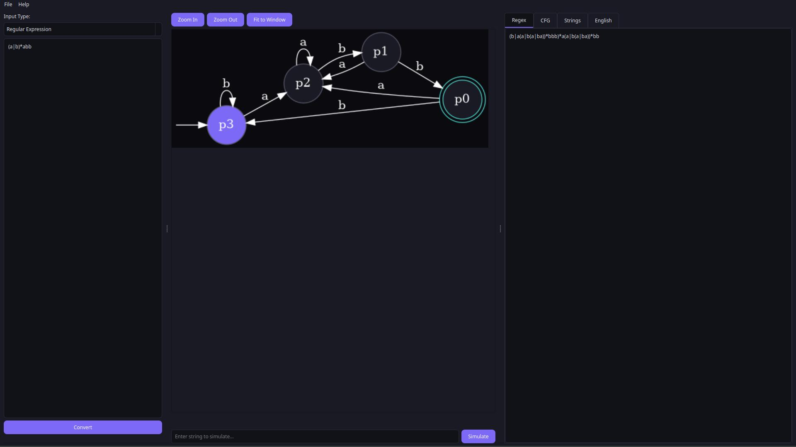
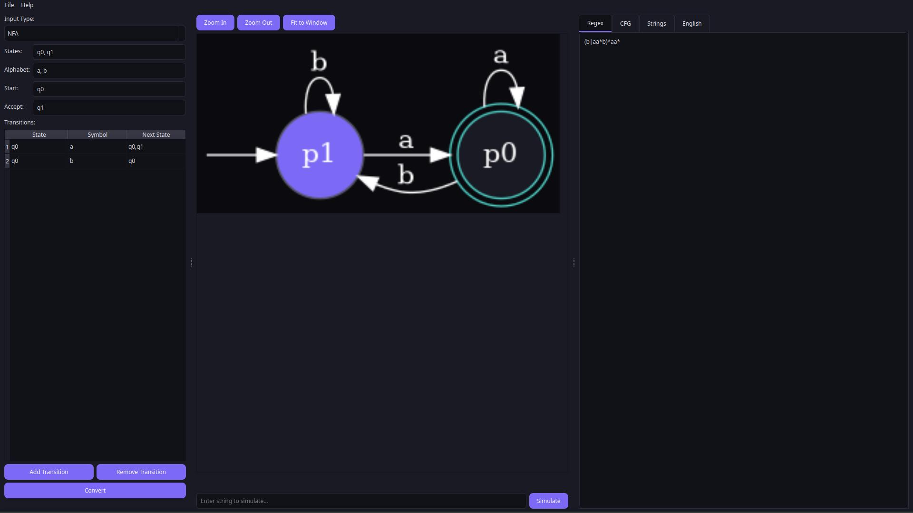

An interactive tool for exploring automata, regular expressions, and context-free grammars.
Our application bridges the gap between theoretical computer science and practical implementation. It allows users to seamlessly convert between different formal language representations.

Parse and evaluate standard Regex into Thompson's NFA and subsets.
Interactive table and text inputs for defining states and transitions.
Support for context-free grammar production rules conversion.
Build automata directly from a set of accepted strings.
We implemented standard algorithms to provide optimized and accurate theoretical results.
Converts regular expressions into Non-deterministic Finite Automata (NFA) systematically.
Eliminates non-determinism by converting NFA to Deterministic Finite Automata (DFA).
Reduces the DFA to its minimal state representation for optimized evaluation.
Moving beyond standard automata, we integrated complex computational concepts.
Parses CFG production rules and translates regular grammars directly into finite automata.
Uses generalized finite automata (GNFA) to rip out states and formulate an equivalent regular expression.
Theoretical concepts are hard to grasp without visuals. We utilize Graphviz to generate dynamic, interactive diagrams of the generated state machines.

Beyond conversions, the system analyzes the finite automata to generate meaningful insights.
Generates the shortest accepted strings (lexicographically) for verification and testing.
The system translates complex DFA structures into understandable English descriptions.
Example: "This automaton accepts strings that contain 'ab' and end with 'a'."
Ready for a live demonstration.